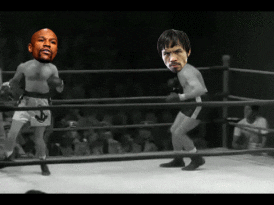
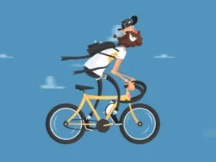
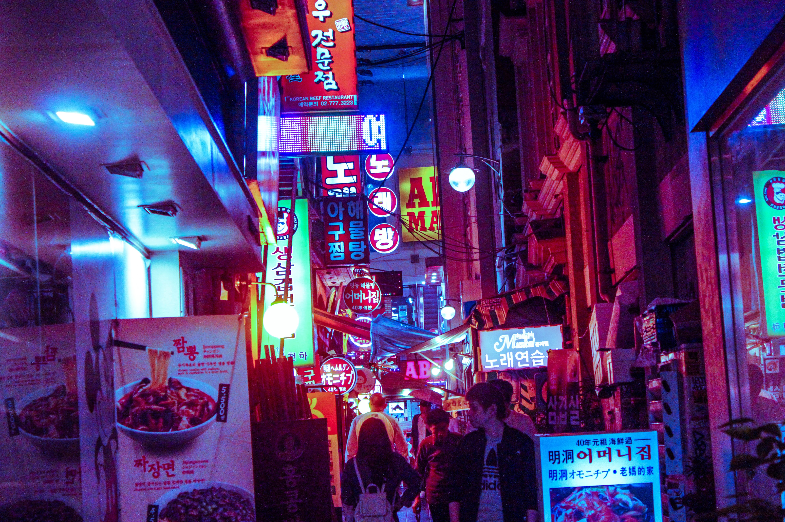
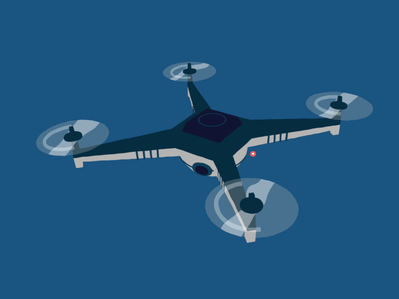

-
Boxing
 Light Flyweight = Me
Boxing
I've been boxing since my Freshman year of high school. Never competed, just trained and sparred. People I train with say I have good technique, so I love teaching the sport to newbies! Boxing is a great way to relieve stress, all while staying in shape and feeling like a badass doing it!
Click here to learn more about my gym: RUSH MMA -
Biking
 My favorite stress reliever is also my favorite way of getting around.
Biking
The summary says it all. The feeling of moving fast on a bike is one of my natural highs. I also hate being a pedestrian and feel naked without my bike, so that's why I always have one with me. I remember at one point having the dream of working as an urban bike messenger part-time. My current bike is a white Vilano Tuono roadbike - a cheapo, but I like the way it looks and it gets the job done.
Click here to buy my current bike! -
Photography
 Say cheese
Photography
I've always loved to take neat pictures. Photography is a great way to share the way you see the world to other people. I used to be into taking more macro still-life photos of nature, but I've recently wanted to move more towards urban cyberpunk/night life photography by making the Blade Runner-esque colors really pop. Here's an urban cyberpunk shot I took while exploring Seoul!
Click here to learn more about night life photography from Youtuber Noealz! -
Chess!

Look up the Chess Empowerment Association of Middle Georgia!
Chess
Chess was a big part of my life. My dad tought me how to play when I was seven, and I couldn't beat him for the longest time. But when I did, I was hooked. I competed on a national level and even went on to co-found my own nonprofit organization: The Chess Empowerment Association of Middle Georgia!
Click here to learn more about CEA -
Drones!
 Bzzzzzzzzzzzzzzzzzzzzzzzzzzzzzzzzzzzzzzzzzzzzzzzzzzzzzzzzzzzz
Drones
I find it addicting to see how the world looks from up above, especially because I'm so short. I've always had a huge passion for aviation since my dad's a pilot, and he inspired me to pursue my private pilot license after I graduate college. Drones help me get my fix for flying in the meantime. I've built an FPV racing quad (but haven't flown it yet), and my first drone was my trusty DJI Spark and I currently fly a DJI Mavic Pro Platinum as my primary drone. My drones make for some of my favorite travel companions. On my free time in Mercer I like to make campus drone videos! One of them should be posted on the computer science website soon.
Click here to learn more about the world leader in consumer drones, DJI -
Guns!

'Merica!
Guns
I've grown up collecting, shooting, and cleaning guns of all shapes, sizes, and calibers! I was a competetive sporting clays in high school (and the only person on the field rocking a 12 Guage pump-action), and I intend to give IPSC a shot after I graduate college. Fun fact: one of the first things I did when I turned 21 was pick up my very own Glock 43X in 9mm. Here is a clip of me handling one of the most powerful handguns in the world: the Desert Eagle chambered in .50AE.
Click here to learn about the best guns and gun training (they even trained John Wick)!